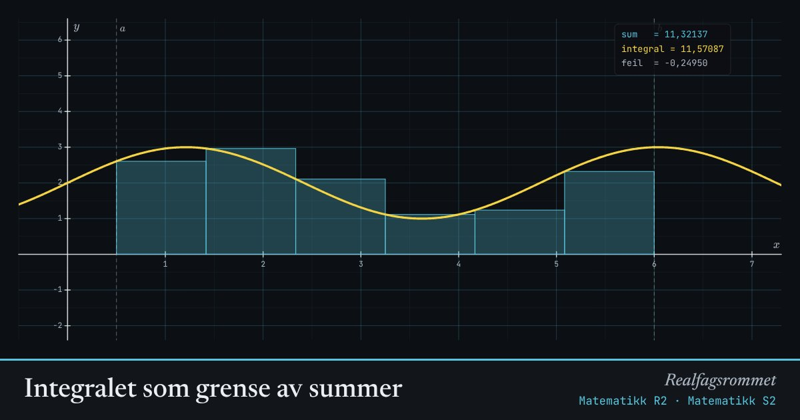

Integralet som grense av summer
Vi tilnærmer arealet under grafen med rektangler. Jo flere og smalere rektangler, jo nærmere kommer summen det bestemte integralet.
Start animasjonen
Formler
Om animasjonen
Hvert rektangel har bredde og høyde , der er venstre kant, høyre kant eller midtpunktet i intervallet.
Røde rektangler ligger under -aksen og teller negativt. Integralet er derfor ikke alltid det samme som arealet.
Trapesmetoden og midtpunktsmetoden er mye mer nøyaktige enn venstre og høyre sum. Det er slike metoder datamaskiner bruker til numerisk integrasjon.
Prøv dette
- Med venstre sum: er summen for stor eller for liten når grafen stiger? Forklar med figuren.
- Hvor mange rektangler trenger du for at feilen skal bli under 0,01 med midtpunktsmetoden?
- Velg den lineære funksjonen. Hvorfor gir trapesmetoden nøyaktig svar?
- Skriv et lite program som regner ut en venstre sum. Sammenlign med tallet her.
Kompetansemål
- Matematikk R2: Integral som grense av summer og numerisk integrasjon
- Matematikk S2: Det bestemte integralet og fundamentalteoremet